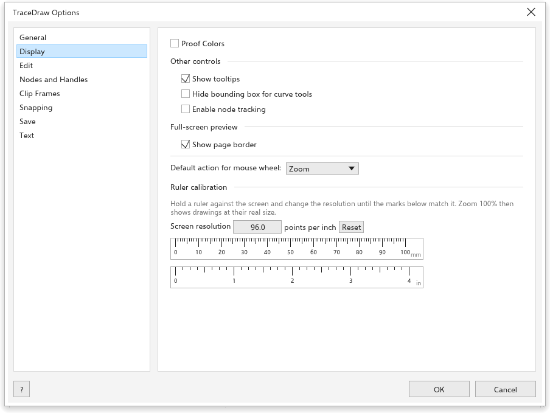

यह पेज अभी अनुवादित नहीं है और अंग्रेज़ी में दिखाया गया है।
TraceDraw options
Tools > Options > TraceDraw (Ctrl+J) sets how the program works. Choose a page from the list on the left.
General

- On {app} start-up: show the Welcome Screen, start a new document, or open the last edited document.
- Show New Document dialog box (on): ask for the settings of a new drawing; see Creating a drawing.
- Show the splash screen at start-up (on).
- Undo levels: how many steps you can undo (150 at first).
Display

- Proof Colors: show colors as they will print.
- Show tooltips (on), Hide bounding box for curve tools and Enable node tracking (off: when on, the Pick tool can drag the nodes of a selected curve).
- Full-screen preview: Show page border.
- Default action for mouse wheel: Zoom (at first) or Scroll.
- Ruler calibration: hold a ruler against the screen and change the Screen resolution until the marks match, so that zoom 100% shows real sizes. Reset puts back 96.
Edit

- Constrain angle: the step of Ctrl when rotating and drawing (15 degrees at first).
- Drawing precision: the decimal places on the property bar and status bar (3 at first).
- Visibility of inactive objects (20% at first) and Double-click to activate focus mode; see Focus mode.
Nodes and Handles

- Node size: small, medium or large.
- Node shape for Cusp, Smooth and Symmetrical nodes.
- Show curve direction when editing.
- Colors: the Main color of selected nodes and handles and the Secondary color.
- Show unselected nodes with fill (Ctrl+Shift+G).
Clip Frame

- Auto-center new content: When content is completely outside frame (at first), Always or Never.
- Show lines in empty clip frames (on).
See Placing objects inside a frame.
Snapping

- Snap to objects (Alt+Z), Snap to page, Snap to guidelines, Snap to grid, the baseline grid and Snap to pixels.
- Snapping radius (10 pixels at first).
- Show snap location marks and the Screen tip.
- Modes: the points objects snap to, with Select All and Deselect All.
See Snapping.
Save

- Backup: Back up original file before saving (on) keeps the previous file as
backup_of_<name>, Back up to the Same folder as original file or a chosen place. - Auto-backup (on): Back up every 20 minutes, to a temporary folder or a chosen place. After a crash the backups are offered; see Auto-backup and recovery.
Text

The page has five tabs.
- Display: Keyboard text increment (how much Ctrl+8 and Ctrl+2 grow and shrink the selected text, 1 point), the Default font and Default size of new text, and Show Non-Printing Characters.
- Paragraph Text: Show Text Frames, Use Hyphenation and the Hyphenation patterns (built-in, or a hyphenation dictionary for your language).
- Fonts: Show recently used fonts at the top of the font lists, the Number of recently used fonts (5, up to 20) and the Font sample size.
- Spelling: Ignore words with numbers, Ignore words in capitals and Add corrections to Autocorrect, so a word you correct in the spell checker is corrected as you type next time; and the Dictionaries it uses, see Dictionaries.
- Autocorrect: what is corrected as you type; see Autocorrect.